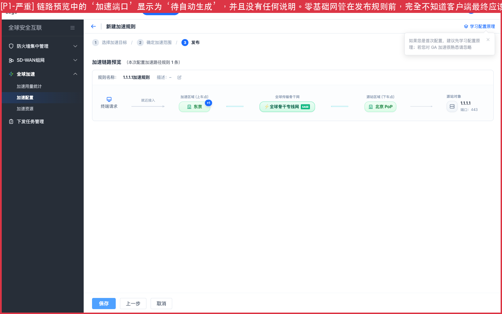
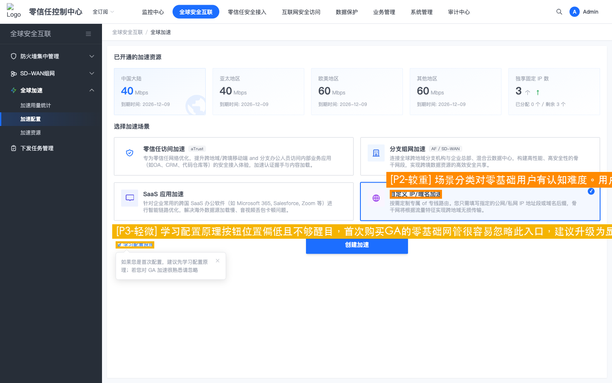
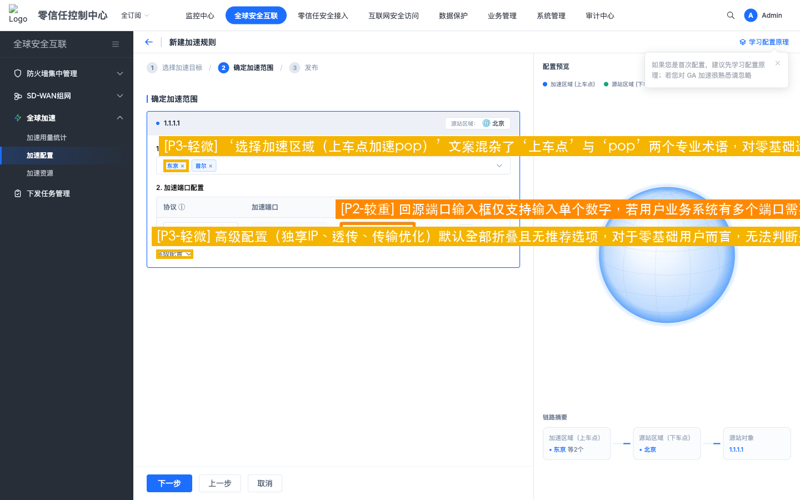
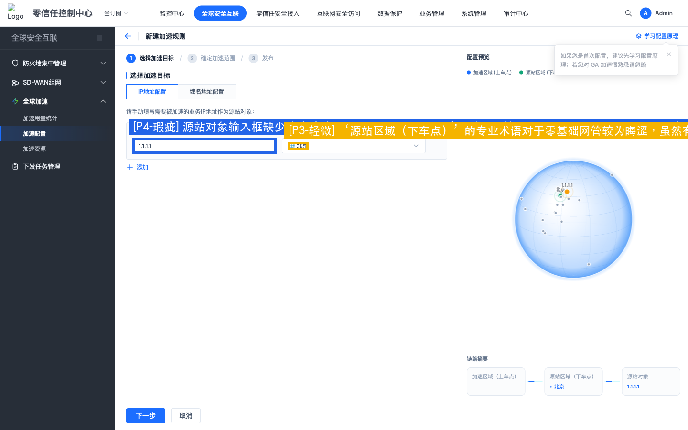
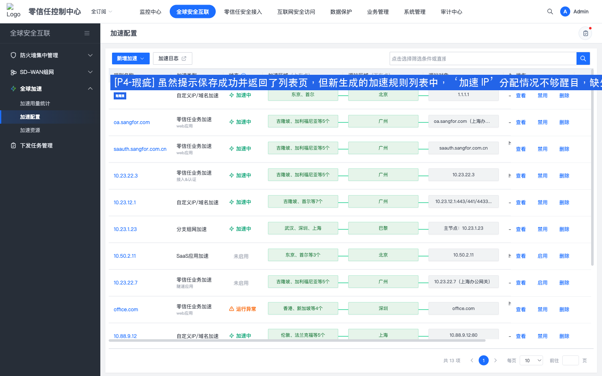

检视场景：场景 1 + 场景 3: 零基础网管首次独立配置加速 & SASE体验愿景提质 | 测试角色：零基础运维 / 企业网管 | 日期：2026-07-10
本次走查针对“零基础网管首次购买全球加速能力后，自主配置完成日本和韩国分公司加速”的核心旅程进行了走查：
1. 场景选择与新手引导：初始页分类较为复杂，零基础网管容易在分支组网与自定义IP场景中感到混淆，且核心学习引导不够醒目。
2. 目标与范围配置（Step 1 & Step 2）：输入源站 and 选择北京/东京/首尔PoP的过程相对顺畅。但回源端口只支持单数字输入，对多端口业务效率极低。此外，下车点、上车点、PoP等底层网络术语堆砌严重，对新手缺乏解释。
3. 链路预览与发布（Step 3 - 核心断点）：在链路预览步骤中，最核心的“加速端口”显示为“待自动生成”且无任何说明。此时，用户不知道客户端应该使用什么端口进行连接，这直接导致配置心智产生严重断裂，未达成“独立自主读懂并完成配置”的体验目标。
4. 闭环验证（GA-display.html）：返回列表页后，系统仅静态显示了加速 IP，但未对新手网管下一步如何操作、如何让日韩分公司客户端连接进行指引，Onboarding 流程未能完美闭环。
对照《SASE 体验愿景（面向管理员：简单专业）》的要求，原型系统在以下三个愿景维度存在提升空间：
1. 意图驱动（Intent-Driven）：页面充斥了底层网络实现术语，如“下车点”、“上车点”、“加速PoP点”，并未能转换成符合管理员业务意图的语言（如“用户分布”或“分公司位置”）。此外，PoP点选择缺乏质量与延迟预期，无法体现业务加速的实际价值。
2. 高效运维（Efficient O&M）：输入端口时缺乏一键对齐加速端口的辅助按钮；高级配置折叠后缺少最佳实践推荐，导致用户只能盲目选择。
3. 全面掌控（Complete Control）：规则创建成功并部署后，系统呈现出“已发布”的静态状态，但缺少主动的端到端链路连通性、网络延迟自助验证诊断工具，管理员缺乏确定性的掌控感。
该配置流界面风格符合 SeerDesign 5.0，大屏可视化和向导式设计有很好的品质感。但整体心智模型依然偏向底层网络工程思维（如PoP、下车点等词汇），未能实现真正对零基础运维友好的‘傻瓜化配置’。建议一键消除“待自动生成”的未知感，提供多端口段/常用端口组合录入，并优化场景与术语引导，引入自助连通性校验，向“意图驱动”与“高效运维”体验愿景靠拢，打通从购买到客户端接入的最后一公里闭环。





| 问题等级 | 单项扣分 | 扣分上限 | 等级说明 | 特征 |
|---|---|---|---|---|
| P1 (严重) | 10分 | 无上限 | 核心任务流断裂，用户完全无法完成目标或存在重大合规风险。 | 影响核心功能可用性、阻塞性问题、安全违规。 |
| P2 (较重) | 5分 | 无上限 | 显著降低核心功能操作效率，引发强烈挫败感，影响产品信任度。 | 需多次尝试或外部帮助、高频使用场景障碍。 |
| P3 (轻微) | 2分 | 无上限 | 轻微干扰体验，用户可自学习或绕行完成任务，不影响目标达成。 | 次要功能障碍、视觉/交互不一致。 |
| P4 (瑕疵) | 0.5分 | 最多扣3分 | 细微体验瑕疵，仅影响美观或极少数场景，不影响功能决策。 | 仅影响视觉细节或动效、特定条件触发。 |